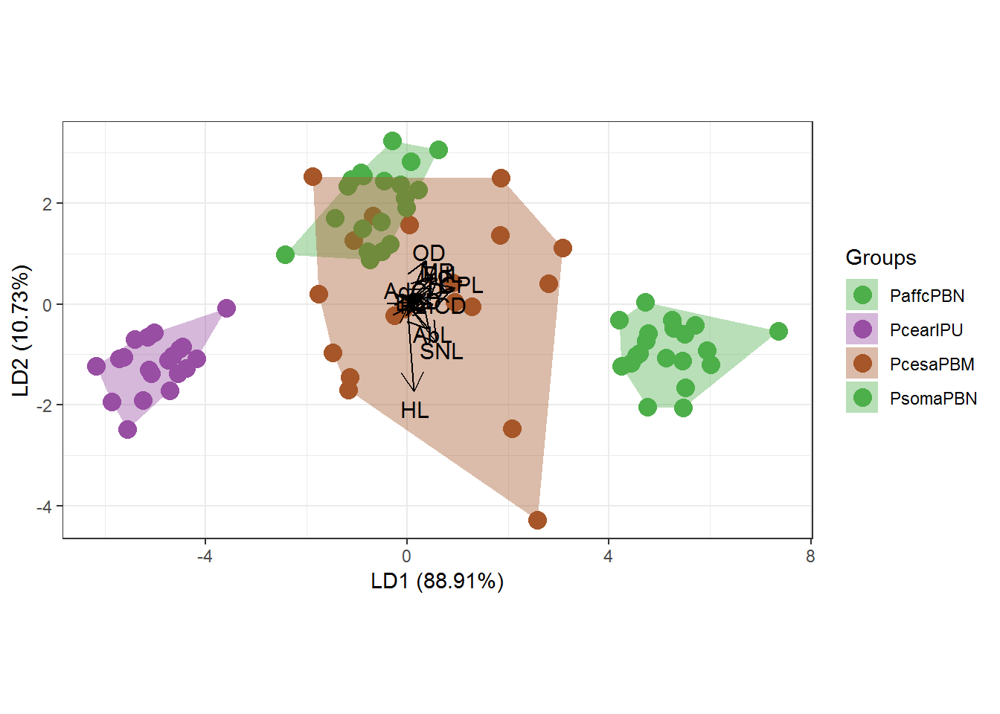

Luciano de Freitas Barros Neto
Routines used in my thesis
In my doctoral thesis I worked with taxonomy, phylogeny and biogeography of a freshwater small armored catfish of genus Parotocinclus, in the Northeast region of Brazil. My thesis is divided into 3 chapters and part of analyzes were carried out in R.
CHAPTER 1
2.4. MATERIAL AND METHODS
2.4.1. Comparative morphology
Multivariate analysis of variance (MANOVA) with a Canonical Variate Analysis (CVA).
Packages used ggplot2 (Wickham 2016), ggord (Beck 2017) and MASS (Ripley et al. 2020). Variance inflation factor (VIF) values were evaluated using package usdm (Naimi et al. 2014).
Data available on my GitHub.
#Open Packages
library(ggplot2)
library(ggord)
library(MASS)##
## Attaching package: 'MASS'## The following object is masked _by_ '.GlobalEnv':
##
## genotypelibrary(usdm)## Loading required package: sp## Loading required package: raster##
## Attaching package: 'raster'## The following objects are masked from 'package:MASS':
##
## area, select#Categorizing the data
data2=data1[-51,c(-1,-2,-3,-6,-10,-13,-16,-19)]
quali=data1[-51,2]
#Viff
vif(data2) # calculates vif for the variables in r## Variables VIF
## 1 BD 2.773280
## 2 HL 2.189652
## 3 TL 4.043232
## 4 AbL 2.479109
## 5 PL 2.864937
## 6 CPL 2.370739
## 7 PdL 4.614436
## 8 SNL 4.233495
## 9 OD 3.182060
## 10 AdCD 1.566629
## 11 AnCD 2.736940
## 12 DL 2.251149
## 13 MR 2.293950vifcor(data2, th=0.9) # identify collinear variables that should be excluded## No variable from the 13 input variables has collinearity problem.
##
## The linear correlation coefficients ranges between:
## min correlation ( AdCD ~ PdL ): 0.2626471
## max correlation ( PdL ~ TL ): 0.7729837
##
## ---------- VIFs of the remained variables --------
## Variables VIF
## 1 BD 2.773280
## 2 HL 2.189652
## 3 TL 4.043232
## 4 AbL 2.479109
## 5 PL 2.864937
## 6 CPL 2.370739
## 7 PdL 4.614436
## 8 SNL 4.233495
## 9 OD 3.182060
## 10 AdCD 1.566629
## 11 AnCD 2.736940
## 12 DL 2.251149
## 13 MR 2.293950#Standardize the data
data3=scale(data2)
#Perform the CVA
cva=lda(data3, quali)
#Standard graphic of `ggplot2` package
ggord(cva, quali) #Graph with shape and color adjustments in `ggord` package
p <- ggord(cva, quali, poly = TRUE, ellipse=FALSE, hull=TRUE, polylntyp = quali, cols = c('#4DAF4A','#984EA3','#A65628', '#4DAF4A'))
p
p + scale_shape_manual('Groups', values = c(23,5, 3, 2))## Scale for 'shape' is already present. Adding another scale for 'shape',
## which will replace the existing scale.2.4.2. Phylogenetic analysis
For a better comparison of genes trees, the two phylogenies were plotted face to face using combined functions for analyzing and visualizing phylogenies from the R packages ape (Paradis, Claude & Strimmer, 2004), phytools (Revell, 2014), ggplot2 (Wickham, 2016), ggtree (Yu et al. 2017), cowplot (Wilke 2019), dplyr (Wickham et al. 2019) and treeio (Yu, 2019).
Data available on my GitHub.
library(ggtree)## ggtree v1.17.4 For help: https://yulab-smu.github.io/treedata-book/
##
## If you use ggtree in published research, please cite the most appropriate paper(s):
##
## [36m-[39m Guangchuang Yu, Tommy Tsan-Yuk Lam, Huachen Zhu, Yi Guan. Two methods for mapping and visualizing associated data on phylogeny using ggtree. Molecular Biology and Evolution 2018, accepted. doi: 10.1093/molbev/msy194[36m-[39m Guangchuang Yu, David Smith, Huachen Zhu, Yi Guan, Tommy Tsan-Yuk Lam. ggtree: an R package for visualization and annotation of phylogenetic trees with their covariates and other associated data. Methods in Ecology and Evolution 2017, 8(1):28-36, doi:10.1111/2041-210X.12628##
## Attaching package: 'ggtree'## The following objects are masked from 'package:raster':
##
## flip, rotatelibrary(ggplot2)
library(dplyr)##
## Attaching package: 'dplyr'## The following objects are masked from 'package:raster':
##
## intersect, select, union## The following object is masked from 'package:MASS':
##
## select## The following objects are masked from 'package:stats':
##
## filter, lag## The following objects are masked from 'package:base':
##
## intersect, setdiff, setequal, unionlibrary(cowplot)##
## ********************************************************## Note: As of version 1.0.0, cowplot does not change the## default ggplot2 theme anymore. To recover the previous## behavior, execute:
## theme_set(theme_cowplot())## ********************************************************library(treeio)##
## Attaching package: 'treeio'## The following object is masked from 'package:raster':
##
## mask#Open data
setwd("C:/Users/Luciano/Desktop/R_MarkDown")
x <- read.tree("CYTBBAYES.tree")
y <- read.tree("COIBAYES.tree")
info <- read.csv("basin.csv")
x <- read.beast("CYTBBAYES.tre")
y <- read.beast("COIBAYES.tre")# Phylogenetic tree 1 -----------------------------------------------------
p1 <- ggtree(x) %<+% info + xlim(0, 40)
p2 <- p1 + geom_tiplab(offset = 2.5, hjust = .5) +
geom_tippoint(aes(shape = Species_group, color = Basin, size = 5)) +
scale_shape_manual(values=c(18, 5, 3, 6, 8, 1, 2, 0)) +
scale_color_manual(values=c('#984EA3','black', '#377EB8','#A65628',
'#4DAF4A', '#A6CEE3')) +
theme(legend.position = "right") +
theme_tree2()
p3 = revts(p2)
p4 = p3 + scale_x_continuous()## Scale for 'x' is already present. Adding another scale for 'x', which
## will replace the existing scale.plot(p4)# Phylogenetic tree 2 -----------------------------------------------------
p5 <- ggtree(y) %<+% info + xlim(0, 40)
p6 <- p5 + geom_tiplab(offset = 2.5, hjust = .5) +
geom_tippoint(aes(shape = Species_group, color = Basin, size = 5)) +
scale_shape_manual(values=c(18, 5, 3, 6, 8, 1, 2, 0)) +
scale_color_manual(values=c('#984EA3','black', '#377EB8','#A65628',
'#4DAF4A', '#A6CEE3')) +
theme(legend.position = "right") +
theme_tree2() #lembrar de remover esse ultimo comando no final#
p7 <- flip(p6, node1=13, node2=14)
plot(p7)p7 = revts(p7)
p7 = p7 + scale_x_continuous()## Scale for 'x' is already present. Adding another scale for 'x', which
## will replace the existing scale.plot(p7)
p7<-p7+theme(legend.position="right")
plot(p7)# plot the 2 trees side by side --------------------------------------------
cowplot::plot_grid(p4, p7, ncol=2, labels = c('CytB','Cox1'))# Final adjustment on trees -----------------------------------------------------
d1 <- p4$data
d2 <- p7$data
d2$x <- max(d2$x) - d2$x + max(d1$x) + 9
pp <- p4 + geom_tree(data=d2) + geom_tiplab(data = d2, hjust=2)
dd <- bind_rows(d1, d2) %>%
filter(!is.na(label))
pp + geom_line(aes(x, y, group=label), data=dd, color='grey')CHAPTER 2
3.4. MATERIAL AND METHODS
3.4.5. Phylogenetic analyzes and molecular clock
Morphometric and meristic data plotted with a heat map associated with molecular data using combined functions to analyze and visualize phylogenies using the packages ape (Paradis et al. 2004), phytools (Revell 2014), treeio (Yu 2019), ggtree (Yu et al. 2017), ggplot2 (Wickham 2016) and ggnewscale (Campitelli 2016).
Data available on my GitHub.
library("ape")##
## Attaching package: 'ape'## The following object is masked from 'package:treeio':
##
## drop.tip## The following object is masked from 'package:ggtree':
##
## rotate## The following objects are masked from 'package:raster':
##
## rotate, zoomlibrary("ggtree")
library("ggplot2")
library("ggnewscale")
library('phytools')## Loading required package: maps##
## Attaching package: 'phytools'## The following object is masked from 'package:treeio':
##
## read.newicklibrary('treeio')#Opening and Categorizing the data
setwd("C:/Users/Luciano/Desktop/R_MarkDown")
beast_tree <- read.beast("Morfo_filo.tree")
genotype <- read.table("Data2.txt", header=TRUE, row.names = 1)
df <- genotype[,1:2]
df2 <- as.data.frame(scale(genotype[,3:15]))#Plot tree
p <- ggtree(beast_tree, aes(x='Node_ages')) + theme_tree2() + scale_x_continuous(labels = abs)
p1 <- revts(p)
plot(p1)#Plot tips names
p2 <- p1 + geom_tiplab(size=4, align=TRUE)## Warning: Duplicated aesthetics after name standardisation: sizeplot(p2)#Creating heatmap with discrete data associated with the tree
p3 <- (p2 + scale_y_continuous(expand=c(0, 0.3))) %>%
gheatmap(df, offset=9, width=0.1, colnames=FALSE)+
scale_fill_viridis_d(option="D", name="discrete\nvalue") ## Warning: attributes are not identical across measure variables;
## they will be dropped## Scale for 'y' is already present. Adding another scale for 'y', which
## will replace the existing scale.## Scale for 'fill' is already present. Adding another scale for 'fill',
## which will replace the existing scale.#Creating heatmap with continuous data associated with the tree
p4 <- p3 + new_scale_fill()
gheatmap(p4, df2, offset=13.5, width=0.8,
colnames=FALSE) +
scale_fill_viridis_c(option="B", name="continuous\nvalue") + scale_x_ggtree()## Scale for 'y' is already present. Adding another scale for 'y', which
## will replace the existing scale.## Scale for 'fill' is already present. Adding another scale for 'fill',
## which will replace the existing scale.## Scale for 'x' is already present. Adding another scale for 'x', which
## will replace the existing scale.CHAPTER 3
4.4. MATERIAL AND METHODS
4.4.1. Morphological analysis
Multivariate analysis of variance (MANOVA) with a Canonical Variate Analysis (CVA).
Packages used ggplot2 (Wickham 2016), ggord (Beck 2017) and MASS (Ripley et al. 2020). Variance inflation factor (VIF) values were evaluated using package usdm (Naimi et al. 2014).
Data available on my GitHub.
#Open Packages
library(ggplot2)
library(ggord)
library(MASS)
library(usdm)#Categorizing the data
data2=data1[,4:21]
quali=data1[,3]
#Viff
vif(data2) # calculates vif for the variables in r## Variables VIF
## 1 BD 11.423268
## 2 HL 48.421409
## 3 CW 11.975266
## 4 TL 5.388162
## 5 AbL 10.949612
## 6 PL 4.110722
## 7 CPD 10.331358
## 8 CPL 14.919976
## 9 PdL 43.614464
## 10 HD 14.493862
## 11 SNL 29.125725
## 12 OD 1.935570
## 13 IW 8.574534
## 14 AdCD 3.280936
## 15 AnCD 2.480605
## 16 PAdD 45.093350
## 17 DL 4.545348
## 18 MR 3.517378vifcor(data2, th=0.9) # identify collinear variables that should be excluded## 5 variables from the 18 input variables have collinearity problem:
##
## PAdD HL PdL HD SNL
##
## After excluding the collinear variables, the linear correlation coefficients ranges between:
## min correlation ( MR ~ PL ): 0.06207773
## max correlation ( CPL ~ AbL ): 0.898937
##
## ---------- VIFs of the remained variables --------
## Variables VIF
## 1 BD 6.293153
## 2 CW 9.375385
## 3 TL 3.572072
## 4 AbL 9.507596
## 5 PL 3.101434
## 6 CPD 8.687367
## 7 CPL 11.593698
## 8 OD 1.497655
## 9 IW 6.530378
## 10 AdCD 2.881833
## 11 AnCD 2.391239
## 12 DL 3.861501
## 13 MR 2.663421#Standardize the data
data3=scale(data2)
#Perform the CVA
cva=lda(data3, quali)
#Standard graphic of `ggplot2` package
ggord(cva, quali) #Graph with shape and color adjustments in `ggord` package
p <- ggord(cva, quali, poly = TRUE, ellipse=FALSE, hull=TRUE, polylntyp = quali, cols = c("#FF7F00","#1F78B4", "#B15928","#33A02C","#A6CEE3","#E31A1C"), size=3)
p + scale_shape_manual('Groups', values = c(25, 25, 25,6,25,25))## Scale for 'shape' is already present. Adding another scale for 'shape',
## which will replace the existing scale.4.4.5. Phylogenetic analyzes and molecular clock
Morphometric and meristic data plotted with a heat map associated with molecular data using combined functions to analyze and visualize phylogenies using the packages ape (Paradis et al. 2004), phytools (Revell 2014), treeio (Yu 2019), ggtree (Yu et al. 2017), ggplot2 (Wickham 2016) and ggnewscale (Campitelli 2016).
Data available on my GitHub.
library("ggtree")
library("ggplot2")
library(treeio)
library("ggnewscale")
library(phytools)
library(dichromat)#Opening and Categorizing the data
setwd("C:/Users/Luciano/Desktop/R_MarkDown")
beast_tree <- read.beast("Jumbo_morfo.tree")
genotype <- read.table("Data3_1.txt", header=TRUE, row.names = 1)
df2 <- as.data.frame(scale(genotype[,1:18]))#Plot tree
beast_tree## 'treedata' S4 object that stored information of
## 'Jumbo_morfo.tree'.
##
## ...@ phylo:
## Phylogenetic tree with 6 tips and 5 internal nodes.
##
## Tip labels:
## [1] "Gen.N.jumbPBN" "Gen.N.sp.1JAG" "Gen.N.sp.2PIA" "Gen.N.sp.3IPO"
## [5] "Gen.N.sp.3PBM" "Gen.N.sp.4SFR"
##
## Rooted; includes branch lengths.
##
## with the following features available:
## 'height', 'height_0.95_HPD', 'height_median', 'height_range', 'length',
## 'length_0.95_HPD', 'length_median', 'length_range', 'posterior', 'rate',
## 'rate_0.95_HPD', 'rate_median', 'rate_range'.p <- ggtree(beast_tree, aes(x='Node_ages')) + theme_tree2() + scale_x_continuous(labels = abs) +
geom_nodelab(aes(x=branch), vjust=-.5, size=3, color="black") +
geom_range('height_0.95_HPD', color='grey', alpha=.8, size=3)
p1 <- revts(p)
plot(p1)#Plot tips names
p2 <- p1 + geom_tiplab(size=4, align=TRUE)## Warning: Duplicated aesthetics after name standardisation: sizeplot(p2)#Creating heatmap with continuous data associated with the tree
gheatmap(p2, df2, offset=4.5, width=4,
colnames=FALSE) +
scale_fill_viridis_c(option="B", name="continuous\nvalue") +
scale_x_ggtree()## Scale for 'fill' is already present. Adding another scale for 'fill',
## which will replace the existing scale.## Scale for 'x' is already present. Adding another scale for 'x', which
## will replace the existing scale.